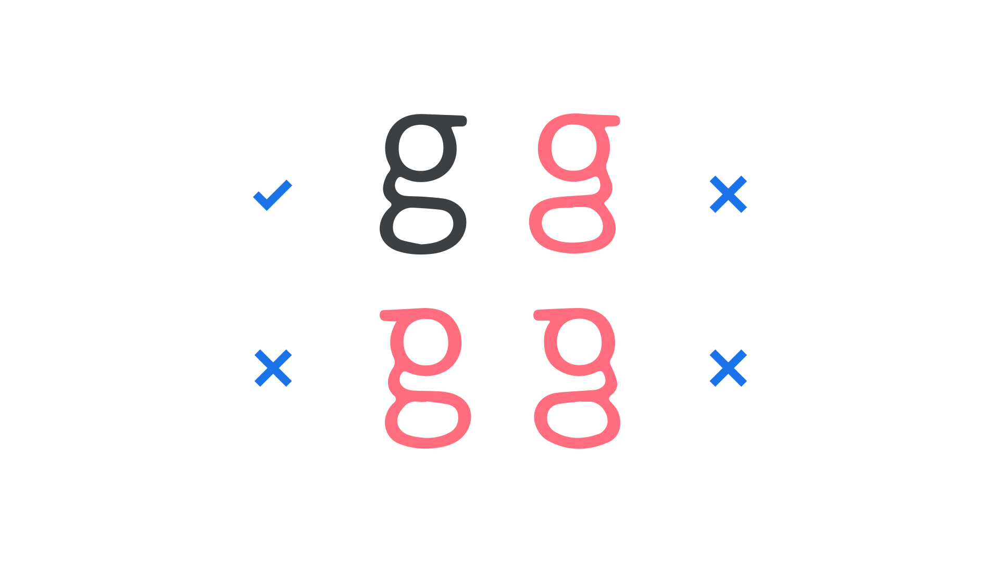
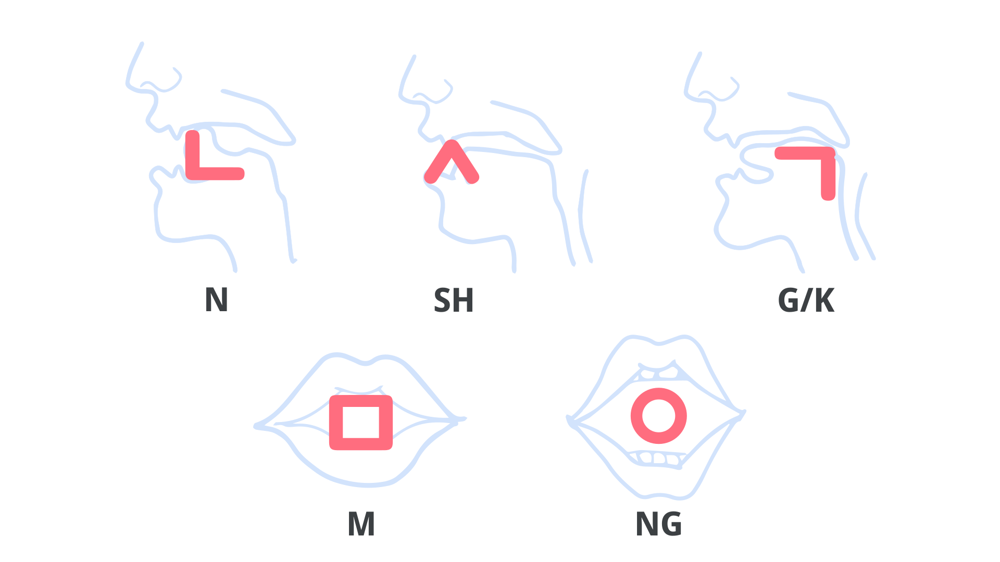
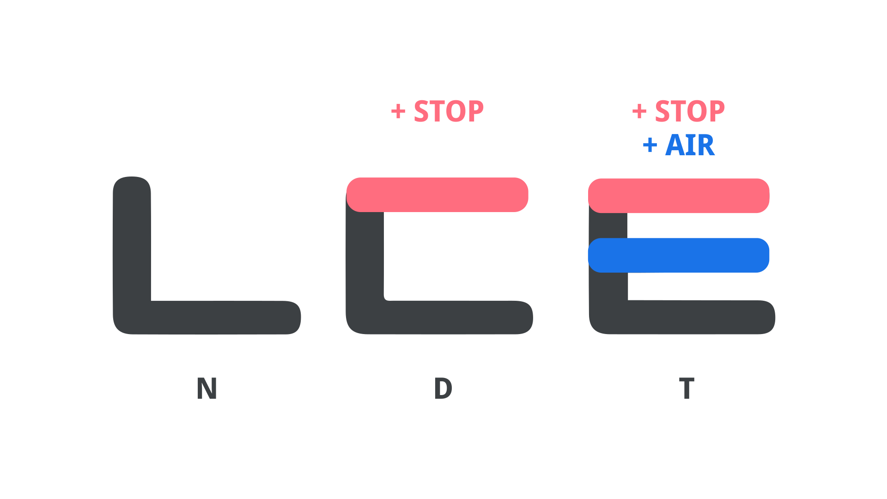

Making the details matter
By Darrell Penta · Google Fonts Knowledge.
Reviewed by Cassidy Curtis, Minjoo Ham, Min-Young Kim, SeHee Lee.
Original article · Source on GitHub · CC BY-SA 4.0. Text, illustrations and existing credits reproduced from the licensed Knowledge repository. Open Shelf adapted the layout and links; these adaptations are also CC BY-SA 4.0. No endorsement implied.
King Sejong the Great began designing a new alphabet for the Korean language in the mid-15th century in the hopes of bringing literacy to common citizens.
Although he was inspired by the design of Chinese, Tibetan Phags-Pa, and other alphabets, he understood that learning any alphabet is inherently difficult, and that to realize his goal, he would need to create a system that was radically different from all the others.
Looking through a modern-day User Experience (UX) lens, we can say that King Sejong found his solution through Information Architecture, or the structuring of information in a way that supports the end-users’ goals.
Attention to the details
Being an alphabet designer is similar in some respects to being a type designer or typographer in that much of the job means focusing on all the small details that define letters, both as individual units and as members of a set.
But there’s an important distinction.
While type specialists can manipulate letter details and employ stylistic variations to achieve various effects, including improving legibility and readability or evoking emotive responses, they still need to preserve the basic forms of individual letters; by comparison, an alphabet designer must, ideally, decide how all the small details should be combined to create a set of usable letters.
In the case of King Sejong specifically, the challenge at hand was in how to make these details matter.
It can be easy to overlook the importance of solving this problem, because once we’ve learned an alphabet, we typically don’t need to focus our attention on letter details (unless, of course, we are in the business of working with type!).
But again, by modern UX standards, it’s not hard to see why most alphabets fall short on providing useful details to learners.
For example, in a recent study involving college students at a well-known American university, less than 30% of participants could correctly identify the lowercase “looptail” letter G when it was presented in a set that included three other incorrect versions. (Note that the letter G has two distinct lowercase allographs, or, in the context of type, alternates:

Example of a stimulus used in an experiment, showing a lowercase looptail letter G, along with three additional incorrect versions in which various parts of the correct letter are subtly transformed.
Although people routinely encounter (and successfully use) the letters and letter variants of their alphabet, this study highlights an important point: When you’re learning an alphabet, there are lots of details to keep track of, but they don’t always matter in meaningful ways.
When King Sejong approached the design of Hangeul, he focused his attention on including details that would make it easier for folks to learn the alphabet.
A blueprint for articulation
One of the most innovative design properties of Hangeul is that it provides its users with a basic blueprint for articulation.
That is, the shapes of the consonant letters were designed to work as iconic representations of the major speech organs involved in producing their corresponding sounds, including the lips, tongue, and teeth.

Five letters from the Korean alphabet superimposed over line drawings of human speech organs, with each letter corresponding to a different speech organ. Below each letter, the approximate sound in English is given.
Although people are unlikely to reference this blueprint once they’ve become proficient in the alphabet, to the learner, it could be quite beneficial.
Evidence from modern cognitive science, for example, suggests that many aspects of human cognition are embodied, meaning that we encode abstract concepts not only in our minds, but in our perceptual and sensori-motor systems as well.
Within this framework, it might be argued that Hangeul uses a visual reminder of the body’s role in producing speech sounds, which could facilitate learning by engaging the learner’s physical being.
Building off of a base
King Sejong’s approach of mapping important speech details to visual details didn’t stop at modeling letters after speech organs; rather, Hangeul incorporates a principle in which sounds that share similar vocalization properties are modeled on a common base letter.

The Korean letters corresponding to the English sounds “N”, “D”, and “T”. The N letter is considered the base shape, and the D and T letters add one and two lines respectively to the base.
For example, if you focus on what’s happening in your mouth as you pronounce the “N” sound (i.e., as though you were slowly saying the word Nice), you’ll notice that you’re making a continuous vibration while your tongue is placed somewhere behind the top row of teeth.
In Hangeul, the letter corresponding to the “N” sound would be treated as the symbolic base. If you next focus on producing the “D” sound, you’ll notice that your tongue is in the same position as before, but that the vibration is initially stopped; and with the “T” sound, that you’ve both stopped vibration and added a burst of air with your tongue in the same position.
In Hangeul, these sound dimensions are reflected by adding one line to the original base letter (N) for the D letter, and by adding two lines for the T letter.
This same paradigm is used throughout Hangeul, making it the world’s first alphabet to incorporate linguistic sound features at this level of detail. (Consequently, linguists often describe it as a featural writing system rather than an alphabet).
While the letter designs in every alphabet might be considered arbitrary to some extent, the fact that the letters of Hangeul differ in predictable and meaningful ways is likely to help learners develop a useful mental model about how the alphabet works.
This attention to the small details of letter design exemplifies King Sejong’s desire to solve problems for the benefit of his intended audience.
In the next article, we’ll take a look at how King Sejong approached the creation of Hangeul with an understanding of different use cases.